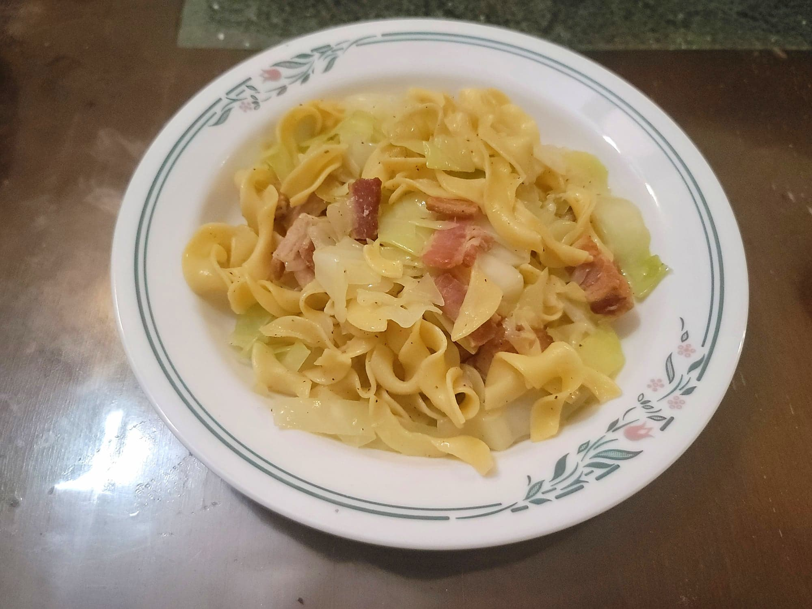

Haluski

Ingredients:
- 1 lb Bacon, cut into medium-sized chunks
- 1 Onion, diced
- 12-16 oz Dried wide egg noodles
- 1 head Cabbage, quartered and sliced
- Salt, to taste
- Black pepper, to taste
Instructions:
- Bring a pot of salted water to a boil. Add the egg noodles and let cook for about 5-7 minutes, or until al dente. Then drain the water and reserve the noodles in a separate bowl/strainer.
- In a medium pan over medium heat, add in the bacon. Cook until crisp, stirring often, about 10 minutes. Then add in the onion and sauté until softened, 5-7 minutes.
- Transfer the bacon, onions, and bacon drippings into the bowl used to cook the noodles. Heat over medium heat and add in the cabbage. Sauté until the cabbage is tender to preference, roughly 10-12 minutes.
- Stir in the noodles and let come to heat. Then add salt and pepper to taste. Serve immediately.